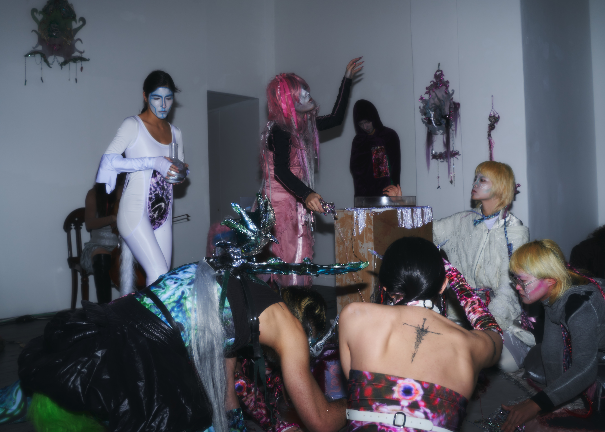
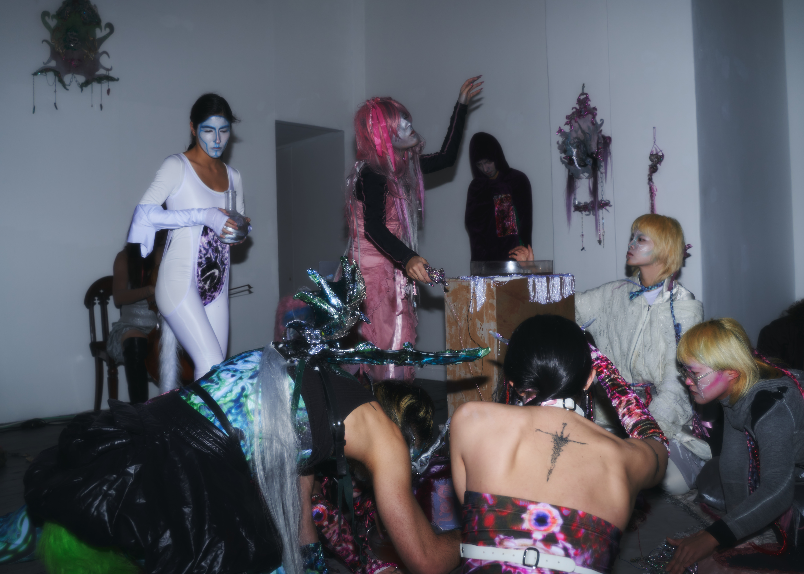
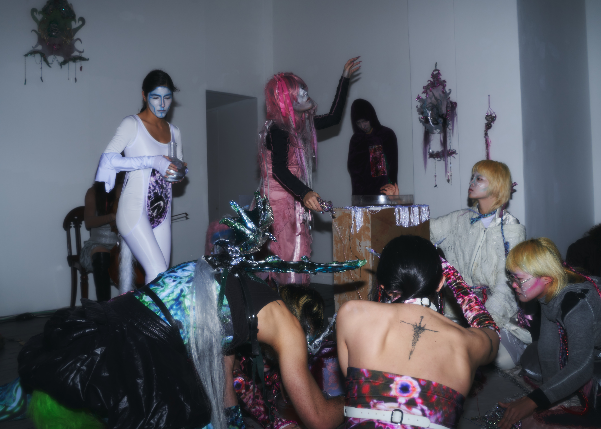

Somers Gallery, London | 22 February - 9 March
Malu Laet’s first solo show Sally’s World presents a new way of worldbuilding through technology and magic. This merge of two seemingly distant subjects reveals the etymology of “virtual reality” (la réalité virtuelle) - a term first used in 1938 to describe the illusory nature of characters and objects in theatre by French playwright Antonin Artaud.
Having varied connotations throughout history, magic practices use tools (sometimes called ‘magical weapons’) to summon the supernatural through ceremonial rituals. With Sally’s World, Malu uses the performative element of magic to reinterpret technology as an intimate interface where a new digital nature is being conjured.
Sally is a fictional character created in Malu’s performative practice. By becoming Sally and evolving with her, Malu brings forth the discussion of whether the threshold of a body can be challenged through the embodiment of other beings.
Sally’s World consists of acts and scenes, in which interactions and conflicts occur between Sally and her friends. With viewers collectively witnessing the performances, these fictional characters take physical existence instead of remaining an imagination in the artist’s mind. Having interactive installations in the space, Sally’s World is inviting everyone to go on the journey of ‘cyber alchemy’, the theurgy that opens a portal between the virtual and the reality.
